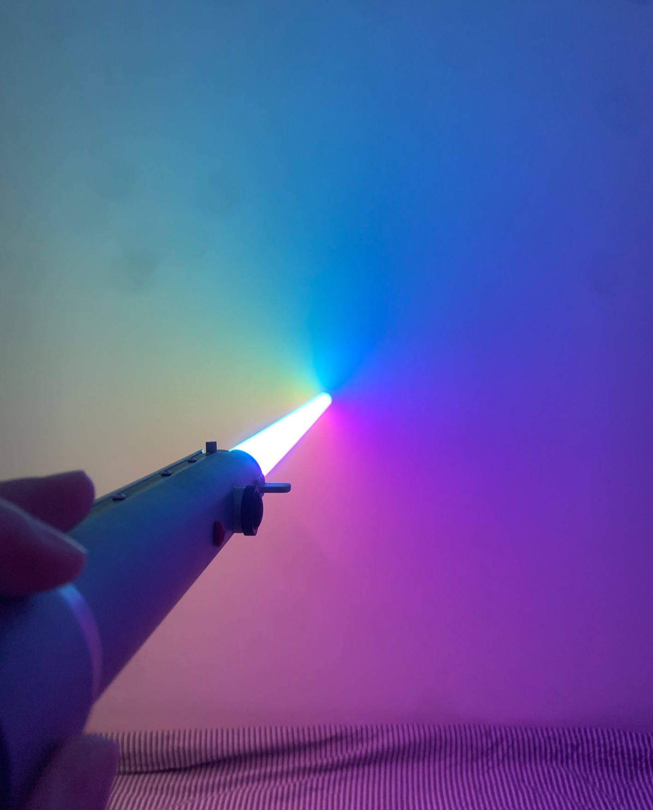
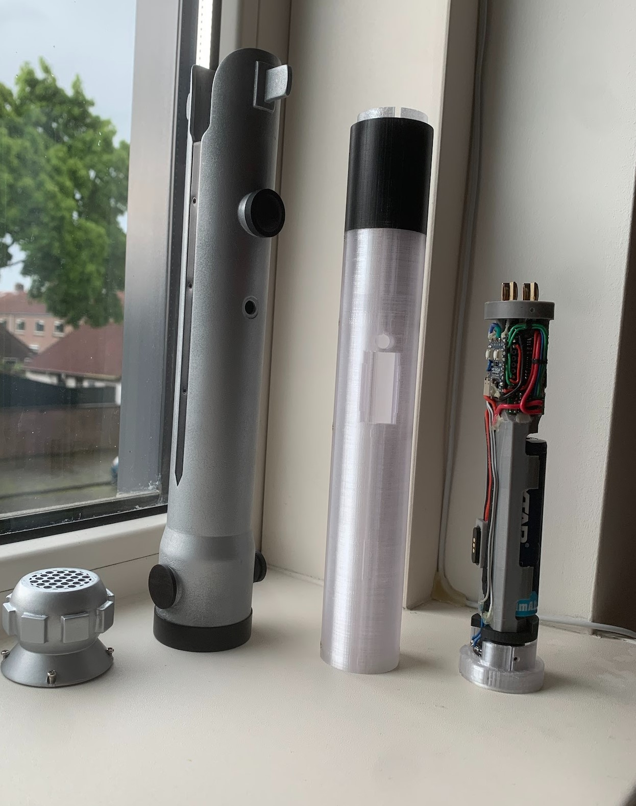
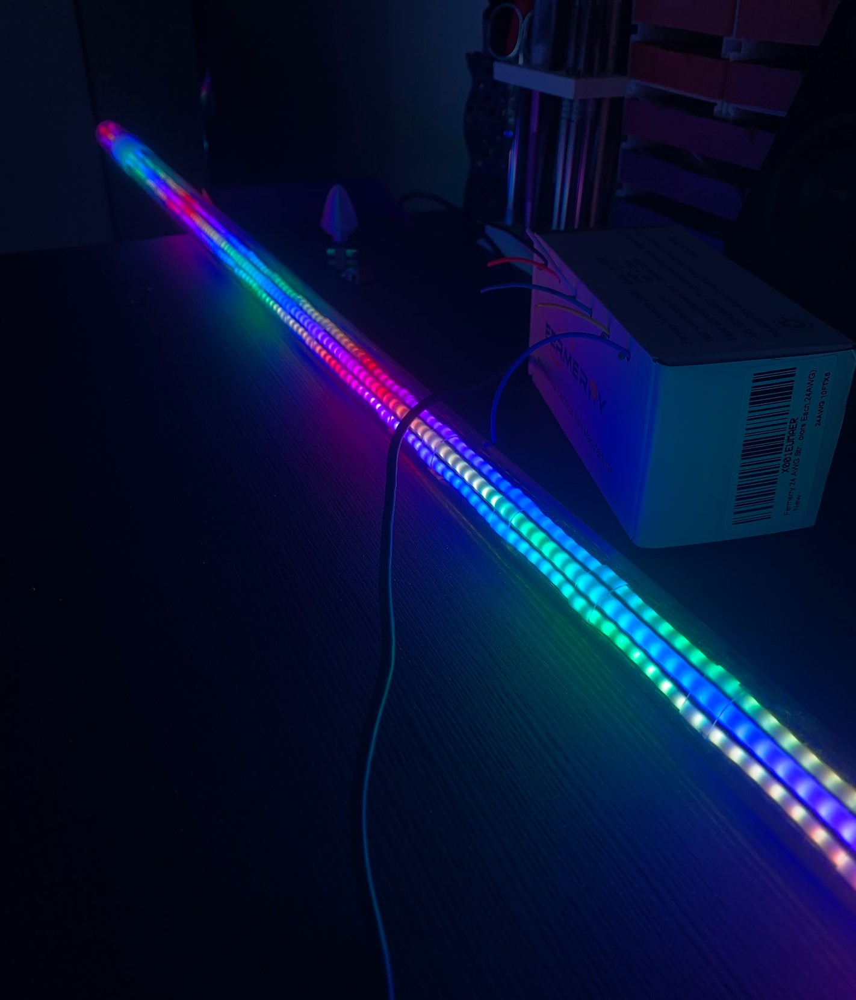
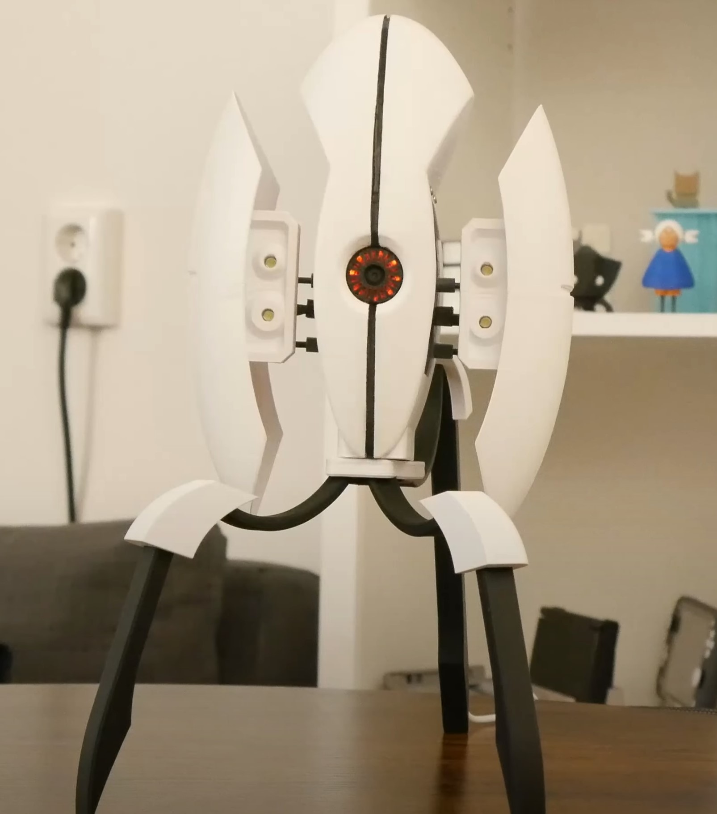
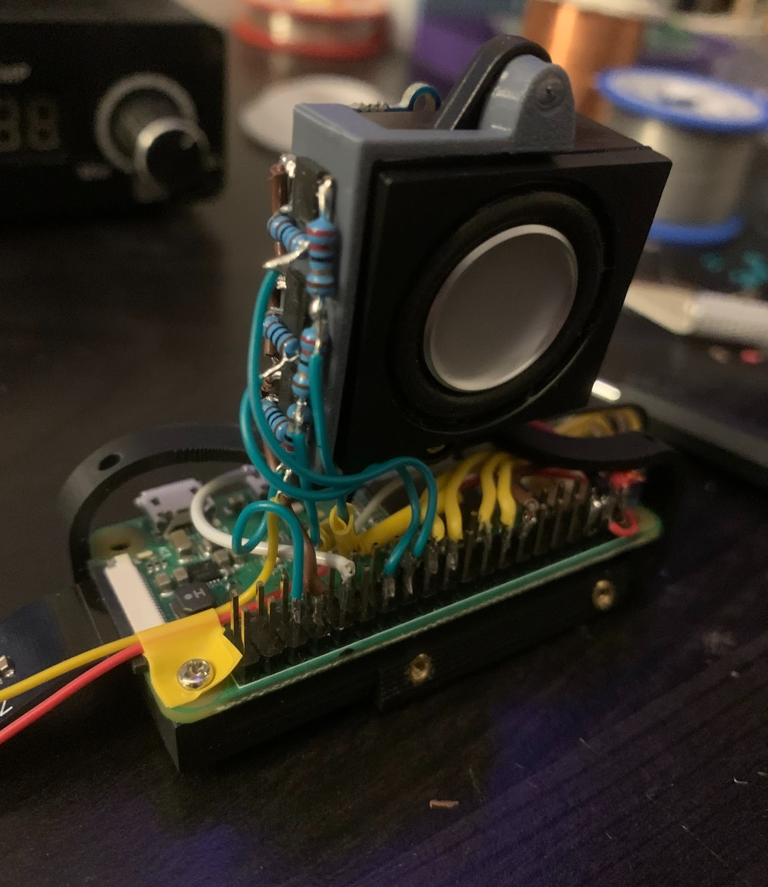
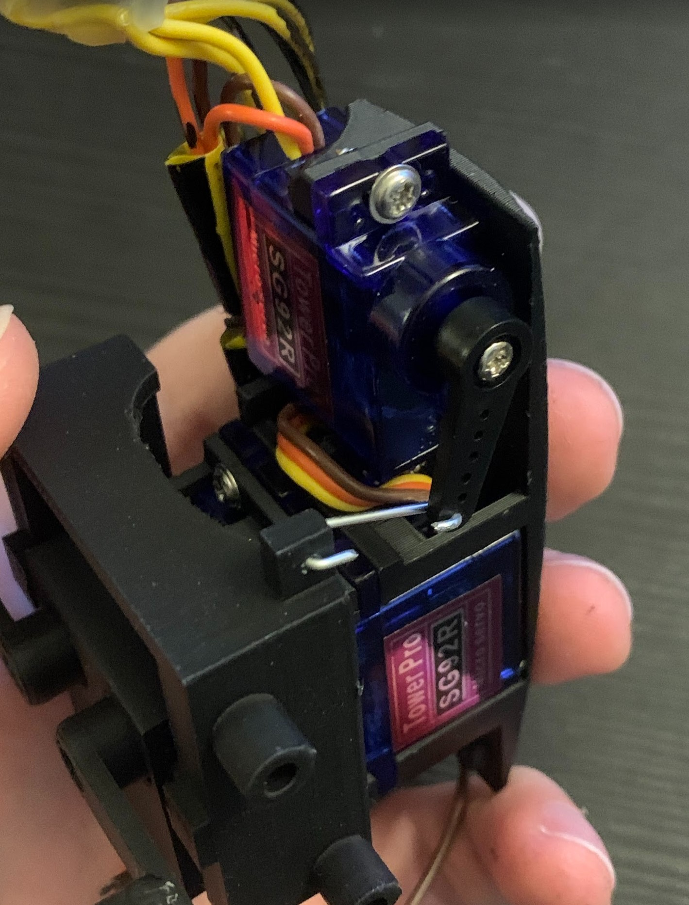
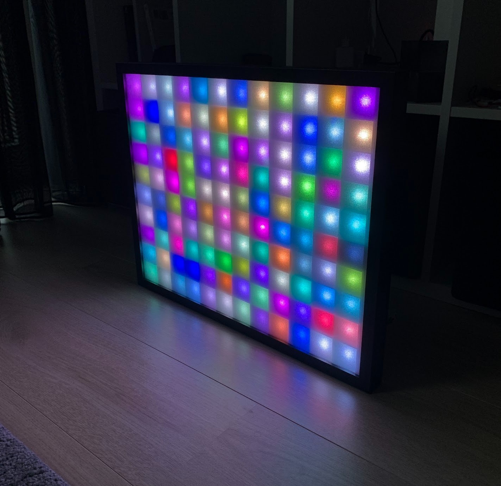
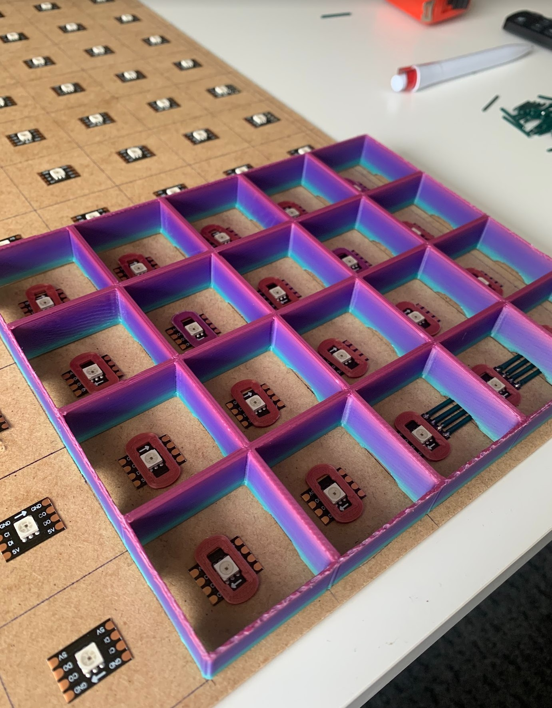
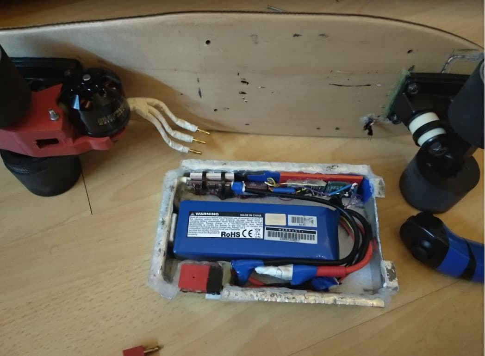
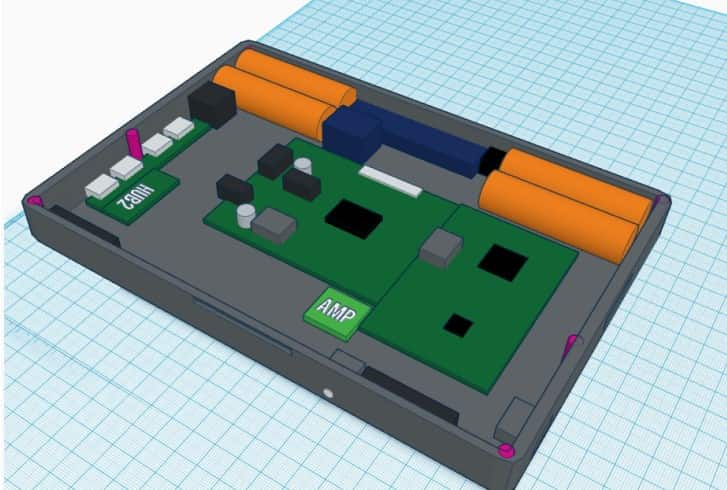

Projects
Here you can find some of the projects I have done in my spare time mainly for fun.
Some of them go back before I even finished highschool, while others are not properly
documented anywhere and only few spare images exist.
Custom Lightsaber - 2024

Custom designed lightsaber prop. Compared to most lightsaber designs, this one has a very unique feature.
There are 5 LED strips that allow the lightsaber blade to have 5 different colors along it's length.
This allows to create a rainbow colored blade that is not possible to do with typical pixel bladed lightsabers.
span class="image main">
All the internal and external parts were custom designed and 3D printed.
The main control system is a Raspberry Pi Pico, and there is a 5W amplifier, an ADXL345 accelerometer,
a TCS34725 color sensor for sensing the color of a custom kyber crystal, and a 2A Li-Ion battery charger.
There is also a custom made power control board as this system can easily draw over 10A at 4V.
span class="image main">
The blade is made of 5 COB WS2812B LED strips, all connected in parallel for power, and in series for the signal.
Portal Turret - 2023

A replica of the popular Turret from the game Portal.
It's a fully 3D printed, fully articulating replica. It can swivel the wings up and down, as well as left and right.
The wings can extend individually from eachother, and the center eye has a camera in the very center.

The whole thing runs on a Raspberry Pi ZeroW. All servos are controlled by the raspberry pi, as well as all the different lights like the bullet flashing lights and the eye lights.
There is a noIR mini camera attached as well, that is used to replicate what the turret does in the game, as in: Detect movement, find the moving target and aim at it.
The speaker also plays all the sound bites from the game, which are freely available in the Portal Wiki.
The software is written in Python and uses OpenCV for the image recognition and tracking.

The internal mechanism for extending as well as rotating the wings is a complete custom design. As far as I am aware, all similar designs use one servo to move both wings in and out.
The reason to use 2 servos is purely for an engineering challenge as well as to allow the dance animation these props do when you finish the game.
Pixel Display 2022

Fun project creating a custom pixel based screen used for showing pixel art or information like time or animations.
10x12 pixels, using individually adressable LEDs (APA102). These LEDs were chosen specifically because of their higher refresh rate, as well as ability to dimm without flickering.
The whole display is made out of a custom designed 3D printed frame that isolated each LED to create each pixel.


The display is using a Raspberry Pi PicoW MCU as it's brain.
The pixel arrangement and drawing methods were done by hand as this offered a learning oportunity for creating such a library

The software connects to a pre-set local WiFi network, and sync the current time using NTP.
There are 3 modes that can be set for this display over a LAN TCP connection.
1) Time, where just the current time is shown, changing color during the day and dimming after midnight.
2) Photo, where a single photo can be shown.
3) Video, where a video stream can be send over TCP to the display to be shown
Weather Station - 2020
This project was done during the first covid-19 lockdown in the Netherlands. It was mainly done
to keep myself busy and try to create something useful out of components I had laying around
from other projects.
So I made a small weather station. For the information display, I used a 4.3” LCD screen, and
powered it with a Raspberry Pi model B, the original one! For extra peripherals a 433Mhz
receiver was added to communicate with the weather station, as well as a proximity sensor that I used to navigate on the user interface.
As for the weather station, I used an old arduino pro mini, a 433MHz transmitter that I got out of
an old doorbell, and a DH11 temperature and humidity sensor. The whole thing was powered
using a 9V battery, and a small solar cell was used to monitor cloud coverage. Of course not a
waterproof system but that could have been added later.
The software on the weather station was pure C on an arduino level, and the microcontroller
would spend about 99% of its time in deep sleep mode, only waking up every few minutes to
take new readings and send them to the display unit.
The display unit GUI was done in Python 3.7 using pygame as the UI manager. The UI has 4
different menus, showing graphs of temperature, humidity and sun, a menu that showed
notifications from various services that were configured using IFTTT, and lastly a menu with
debug info. All history info was stored in a SQlite database locally. The proximity sensor also
allowed a complete system shutdown or reboot based on timing events.
Smart Doorbell - 2018
This was a one day project that I made out of pure frustration of the doorbell situation at the
building I used to live in. The doorbell was a simple wireless doorbell that had a receiver that
plugged into the wall and would play a sound when it rang from the outside. While this worked,
the device was in a location I couldn’t hear in my apartment.
So what I did was, I took apart the receiver, and modified it slightly to get a signal out of it when
the bell was rang. This was an analog signal, and thus I needed to use something with an ADC
to make it internet connected. I already had a Raspberry Pi that was 24/7 on and acted as a
media center for my TV, and so I decided to use that. Instead of an ADC, I used an ATtiny8
board to read the ADC, and output a digital signal that I then connected to a GPIO input on the
raspberry pi. Then on the raspberry pi, I wrote a simple python script to read the GPIO pin, and
if it was HIGH, I would send a message to my phone using Telegram. Telegram allows anyone
to create a bot and there are APIs to control the bot from a python script, so I used that.
Electric Skateboard - 2017

This was probably the most fun I ever had with a project. I wanted to make a portable electric
skateboard, but on a budget. This skateboard has done over 500km and has been used as a
commute vehicle for about a year before suffering a battery failure.
So the electric penny sized skateboard was born. I used a 1.2KW 300KV brushless DC motor,
controlled with a 90A ESC, which in turn was controlled by an arduino nano. A 5KWh li-po
battery was used that allowed up to 15km of range on a single charge. The housing for the
electronics was made out of 4mm aluminium sheet that was bent to shape,and would screw
below the deck. The motor was mounted on the trucks of the back wheels, using a 3D printed
mount. The motor would use a pulley and a belt system to drive one of the wheels. The wheel
gear was also 3D printed. All 3D printed parts were printed at 100% infill and ABS, for maximum strength.

On the actual controller now, that controlled the speed, brakes and cruise control of the board,
that was made out of a Nintendo Wii nunchuk. This was chosen mainly for its ergonomic size
and because it already provided an analog control stick. The controller was extensively modified
to allow a small li-po battery, an arduino micro, a bluetooth module and a charge controller to all
fit into it. As it’s pretty obvious, the controller communicated with the board using bluetooth. The
controller also featured LEDs to indicate the battery charge of the board, as well for the battery
of the controller itself.
Many safety features were also incorporated, for example signal loss of either device would
cause the board to decelerate to a complete stop. The analog stick also had a safety feature in that it would
only change the speed if the trigger button was also pressed, which prevented accidental acceleration.
Lastly, head and tail lights were also incorporated in the design, and were triggerable from the
controller to allow the board to be used after sunset.
Raspberry Pi Laptop - 2015

This project took way longer to complete than it ever should have. I had this idea of making my
own laptop after messing around with the original Raspberry Pi, so obviously I looked up on the
internet to see if others had done it. To my surprise, nobody had gone all in on such a project,
instead using power banks and bluetooth keyboards on a case and calling it a laptop.
I wanted to go all in, and create a fully functioning laptop, and so I did. This was the first project I
made a 3D model out of, as you can see below.

A little more info regarding the electronics, a Raspberry Pi 2
is used, with all plugs and connectors removed to reduce height. The screen is a 7” LCD panel at 720p resolution,
with its own controller. The keyboard is a USB keyboard taken out of a tablet case. The trackpad is a very old
PS/2 trackpad taken out of an HP laptop, and a PS/2 to USB adapter is used as well. There is a 2W stereo amplifier
and stereo speakers from the aforementioned HP laptop, as well as a USB WiFi module, an SD card reader, and a 3 port USB hub.
Lastly, the battery is a 10.000mAh li-on battery with both the cells and charge/discharge and boost circuitry taken out of a power bank.
As for the mechanical aspects, the whole laptop is made out of 1mm aluminium sheet that is bent and cut to shape.
The electronics are attached using either superglued nuts for the big components, like the main PCBs, or hot glue for other smaller components.
Instructable I made with a lot more information about the build
DIY Smartwatch - 2014
This was a project that I pursued simply because I liked the Pebble smartwatch, and I wanted
one, but I didn’t have the budget to buy one so I decided to make one.
It was based on an arduino pro mini, a bluetooth module and a 0.96” OLED screen. Other
features were a 140mAh li-ion battery, a disk vibrator motor, 3 tactile buttons and an LED flashlight.
The watch had firmware the allowed it to sync time from a smartphone, contol music playback as well as
receive and display system notifications. The smartphone side of the software was done using Tasker, so no real
Android development took place there.
This project was never completed because the casing, which was designed to be 3D printed,
was not possible to be made because I lacked access to a 3D printer at the time.
LCD LED Projector - 2012

This was the first major project I ever attempted in highschool. I got the idea from a youtube video where
someone had created a home theater projector on their own, and I wanted to make one as well.
The complexity of such a project is pretty easy for a knowledgeable engineer, but for me, not
having a clue how electronics worked made for some very creative solutions.
The projector works by having a 30W LED act as the backlight to a 3.5” LCD screen.
By using a lens to focus the light evenly on the screen, the screen is then projected to a wall
This projector also incorporated playback from a USB drive, which was achieved by
cannibalizing a portable dvd player that had that functionality.
While the whole design could have been a lot, and I mean a lot better, I feel proud for making
this and actually using it to watch movies with friends during the summer. I dedicated a lot of time
and love to make it happen, and it still works to this day.
Honorable Mentions 2010-2016
In the photo above the projector and part of the Raspberry Pi laptop can be seen.
Alongside that, there is a 10” subwoofer speaker that actually worked at over 600W, a small
tesla coil using the “slayer exciter” circuit, and a steering wheel and gearshift system that I made
out of an old USB game controller. The steering wheel and gear system was made because I
liked racing games but was too poor to buy a proper steering wheel for gaming, so I made one.